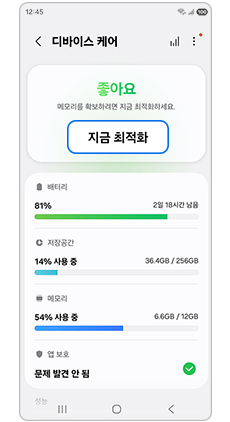
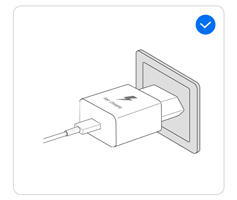
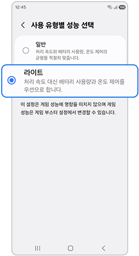

갤럭시 발열, 삼성 공식 대처 순서
게임을 한참 하고 나면 폰이 유독 뜨거워질 때 있으시죠? 충전기만 꽂아뒀는데도 갤럭시 발열이 심해질 때가 있고요. 그런 증상이 왜 생기는지 궁금하실 거예요. 삼성전자 서비스 공식 문서에서 확인해 원인과 대처 순서를 정리해봤어요.
이 글은 발열 증상에만 집중해요. 배터리가 유독 빨리 닳는 증상이라면 원인이 달라요. 그런 경우엔 배터리 빨리 닳을 때 점검법 글을 먼저 보시는 게 더 정확해요.
이 글은 삼성전자 서비스 공식 문서 내용을 확인해서 정리했어요. 문서 게시일은 2026년 2월 26일 표기이고, 이 글은 2026년 8월 3일 기준이에요.
갤럭시가 갑자기 뜨거워지는 이유는 뭔가요?
충전기·케이블 문제로 뜨거워지기도 해요. 게임처럼 전력을 많이 쓰는 작업 때문에 뜨거워지기도 해요.
원인을 공식 문서 기준으로 정리하면 이래요.
- 손상된 기기이거나, 규격에 맞지 않는 비정품 충전기·손상된 케이블을 쓰는 경우
- 초기 설정이나 데이터 복원 중이라 재부팅과 앱 설치·업데이트가 몰리는 경우
- 클라우드로 대용량 파일을 올리거나 받을 때, 대량 동기화가 진행 중인 경우
- 고사양 게임·고화질 동영상·스트리밍·GPS처럼 전력을 많이 쓰는 기능을 오래 쓰는 경우
- 화면을 최대 밝기로 오래 켜두는 경우
- 멀티윈도우로 여러 작업을 동시에 하거나, 앱 업데이트 중 촬영을 하는 경우
- 대용량 다운로드와 영상통화를 함께 돌리는 경우
- 핫스팟·테더링을 오래 켜두거나 TV·PC에 오래 연결해 두는 경우
- 사우나·찜질방 같은 고온 환경이거나 직사광선 아래에 있는 경우
- 이불이나 두꺼운 코트·가방처럼 열이 안 빠지는 공간에 있는 경우
- 전기장판·온수매트·핫팩·자동차 히터 근처에 있는 경우
- 전파가 약한 지역이나 해외 로밍 중인 경우
무선충전이나 케이블 연결 부분에 이물질이 있어서 생기는 발열도 있어요. 이 두 가지는 자주 묻는 질문에서 다룰게요.
발열이 생기면 삼성 공식 대처 순서는 어떻게 되나요?
기기 최적화부터 순서대로 하나씩 해보면 돼요.
이 순서는 삼성전자 서비스 공식 문서에 나온 그대로예요.
기기 최적화부터 해보세요. 설정 앱에서 디바이스 케어로 들어가 지금 최적화를 누르면 돼요.
- 설정 앱으로 들어갑니다.
- 디바이스 케어를 선택합니다.
- 지금 최적화를 누릅니다.

디바이스 케어 화면에서 지금 최적화 버튼을 누르는 예시예요.
이미지 출처: 삼성전자 서비스 공식 문서(solution/618161)
다음은 절전 모드 활성화와 백그라운드 앱 사용 제한이에요.
- 설정 앱에서 디바이스 케어로 들어갑니다.
- 배터리 메뉴를 선택합니다.
- 절전 모드를 활성화합니다.
- 백그라운드 앱 사용제한으로 들어갑니다.
- "사용하지 않는 앱을 절전 상태로 전환"을 켭니다.
충전 중에 뜨거워졌다면 이 순서보다 먼저 할 일이 있어요. 바로 다음에서 다룰게요.
충전하면서 뜨거워지면 어떻게 대처하나요?
충전기를 빼고 실행 중인 앱을 먼저 종료하는 게 첫 순서예요.
이 절차도 삼성전자 서비스 공식 문서에 나온 그대로예요.
- 충전기를 뽑고 실행 중인 앱을 모두 종료합니다.
- 온도가 내려간 뒤에 다시 충전합니다.
- 그래도 문제가 이어지면 삼성 정품 충전기와 USB 케이블인지 확인합니다.

충전 중 발열 대처 절차와 함께 실린 충전기 이미지예요.
이미지 출처: 삼성전자 서비스 공식 문서(solution/618161)
규격에 맞지 않거나 손상된 케이블은 발열 원인이 될 수 있어요. 충전 포트 자체가 뜨거워질 수 있다고 공식 문서에 적혀 있어요.
그래도 발열이 안 가라앉으면 어떤 조치가 남아 있나요?
라이트 모드로 바꾸고, 그래도 그대로면 재부팅과 자가진단까지 차례로 해보면 돼요.
라이트 모드로 바꿔보세요. 설정 앱에서 디바이스 케어 → 사용 유형별 성능으로 들어가 라이트를 선택하면 돼요.
- 설정 앱에서 디바이스 케어로 들어갑니다.
- 사용 유형별 성능을 선택합니다.
- 라이트를 선택합니다.
라이트 모드는 AP 처리 속도를 일부 조정해서 발열과 전류 소모를 줄여주는 기능이에요.

사용 유형별 성능 화면에서 라이트를 선택하는 예시예요. 화면에는 "처리 속도 대신 배터리 사용량과 온도 제어를 우선으로 합니다"라고 적혀 있어요.
이미지 출처: 삼성전자 서비스 공식 문서(solution/618161)
여기까지 해도 여전히 뜨겁다면 다시 시작(재부팅)을 해보세요. 그다음엔 삼성 멤버스 앱의 자가진단으로 배터리 상태를 점검하면 돼요.
삼성전자 서비스 공식 문서는 이 메뉴를 자가진단이라고 표기해요. 이 발열 문서에는 진단 결과에 따른 별도 안내는 나와 있지 않아요.
자주 묻는 질문
Q. 무선충전 중에도 발열이 심해질 수 있나요?
네, 그럴 수 있어요. 무선충전 패드와 기기 사이에 이물질이 끼어 있으면 발열이 심해질 수 있어요. 신용카드·금속류나 자석이 대표적인 예라고 공식 문서에 나와요.
Q. 케이블을 꽂는 부분(외부 커넥터)에 이물질이 있어도 뜨거워지나요?
네, 그럴 수 있어요. 액체·먼지·금속가루·연필심 같은 이물질이 커넥터에 있으면 발열 원인이 될 수 있어요. 공식 문서에 실제로 적혀 있는 내용이에요.
Q. 자가진단에서 배터리 상태가 나쁘게 나오면 별도 조치가 나오나요?
이 발열 문서에는 진단 결과에 따른 별도 안내가 없어요. 배터리가 빨리 닳는 증상을 다룬 다른 글에서는 결과가 나쁘게 나오면 서비스센터 방문을 안내해요. 이 발열 문서는 자가진단으로 점검해보라는 안내까지만 나와요.
Q. 라이트 모드를 켜면 게임할 때 성능이 떨어지나요?
아니요, 라이트 모드는 게임 성능에 영향을 주지 않아요. 게임 성능은 게임 부스터 설정에서 따로 조정할 수 있다고 공식 문서에 나와요. 절전 모드와 달리 화면 재생률도 그대로 유지돼요.
참고한 곳
· 삼성전자 서비스 — [삼성 스마트폰] 갤럭시, 사용 중 기기가 따뜻해지거나 뜨거워지는 등 발열 현상이 있습니다
✔ 같이 보면 좋아요
· 갤럭시 배터리 빨리 닳을 때, 삼성 공식 점검 3단계
하루 정리
· 갤럭시 발열은 충전기·케이블 문제, 사용 습관, 주변 온도까지 원인이 여러 갈래예요.
· 평소 사용 중에 뜨거워졌다면 기기 최적화와 절전 모드부터 확인해보세요.
· 충전 중에 뜨거워졌다면 충전기부터 빼고 앱을 종료해보시는 게 먼저예요.
· 그래도 그대로면 라이트 모드, 재부팅, 자가진단까지 순서대로 해보시면 돼요.